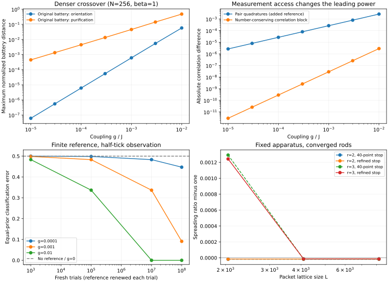

Measurement access changes what can be detected
Targeted follow-up · 22 September 2026 · measured results in the declared free-fermion model
The original measurement battery retains an orientation response proportional to g². Adding a local reference that permits pair-sensitive readout gives a response proportional to g. The exponent depends on the allowed measurement procedure. The zero-coupling null remains. The reference and joint readout are additional apparatus; this comparison changes identifiable leading-order response under the declared access class, not the model-level causal structure itself.
This study follows the Orientation Lab and Verdict Lab. It adds a denser coupling sweep, reference-dependent detection with a finite trial budget, and larger-lattice convergence checks. It was designed after inspecting the original data and an exploratory pair-correlation probe; it is not a blinded or independently preregistered confirmation.

1 · A different measurement channel
A normal correlation measures quantities such as ⟨c†icj⟩. The additional detector measures a pair correlation ⟨cicj⟩ relative to a local reference. Its response exponent lies between 0.999724 and 1.000018 across the tested sizes, temperatures, and durations. All 18 pair-response fits satisfy the declared fitting-window stability criterion.
The reference has levels containing zero or two particles and a known phase relative to the sample preparation. Pair exchange between the sample and reference conserves their total particle number. This reference and joint readout are extra apparatus; the original observer's controls do not automatically supply them. Without reference coherence, this particular detector is at chance.
2 · Numerical visibility does not imply easy detection
The table gives equal-prior classification error for the specified pair-sensitive detector at N=128, beta=1, and half a reference tick, using full reference coherence and no readout flips. Each trial starts with a fresh sample and reference.
| Coupling g/J | 1,000 trials | 100,000 trials | 10 million trials | 100 million trials |
|---|---|---|---|---|
| 0 | 50% | 50% | 50% | 50% |
| 0.0001 | 49.98% | 49.83% | 48.32% | 44.69% |
| 0.001 | 49.83% | 48.32% | 33.65% | 9.10% |
| 0.01 | 48.32% | 33.66% | 0.00124% | Below 10−38% |
At g=0.001 and 100 million trials, halving reference visibility raises error from 9.10% to 25.23%; adding 5% readout flips raises it to 27.41%. The exact binomial calculation was checked against simulated count records. These are classification errors, not significance levels.
This is an ideal apparatus benchmark with known calibrated probabilities and independent trials. Reference preparation, transport, resetting, and calibration costs are not included in the trial count. It does not optimize over every possible measurement.
3 · Crossover robustness has limits
Seven positive couplings from 10−5 to 10−2 give an original-battery orientation exponent of 1.9947 at N=256, beta=1. The purification exponent is 1.0111 for the original scramble seed in that setup.
Two additional scramble seeds at N=128 give full-window purification slopes of 0.9004 and 0.8908, while their weaker-coupling slopes approach 1. Those two comparisons fail the declared full-window stability criterion. Individual battery items can also be more sensitive than the maximum distance.
Clock calibration duration matters. At g=0.01, the tested 100/200/300-unit fit windows give purification distances 0.9117 / 0.4214 / 0.4857. The data therefore support a scoped weak-coupling result, with the seed and measurement window retained as part of the procedure.
4 · Spreading converges on larger lattices
Two previously uncertain large-rod points were checked with refined stopping times, rod lattices up to L=4096, and packet lattices up to L=8192. Both meet the declared convergence criteria.
| Coupling ratio Jx/Jy | Refined spreading ratio | Change from packet L=4096 to 8192 |
|---|---|---|
| 2 | 0.99998409 | 8.1 × 10−15 |
| 3 | 0.99998677 | 1.3 × 10−11 |
The size differences are numerical convergence diagnostics, not detector error bars. The checks strengthen cancellation evidence for these spreading observables, without establishing exact equality at finite rod size. Fits to the existing wavepacket data remain consistent with an approximate 1/ξ² correction, but some fitting windows are unstable; a precision exponent claim would need further evidence.
Scope. Infrared isotropy does not establish Lorentz invariance. The tested band-bottom dispersion is quadratic and nonrelativistic. The study does not derive boost covariance, a universal clock, or an ontology from its operational results. The original result files and verdicts remain intact.
Evidence and reproduction
Both existing physics-validation suites, seven new measurement and failure-path tests, and the artifact checks pass. Source and input hashes identify the executed code and preserved datasets. No additional sweep was added to repair unfavorable seed or fitting-window outcomes.